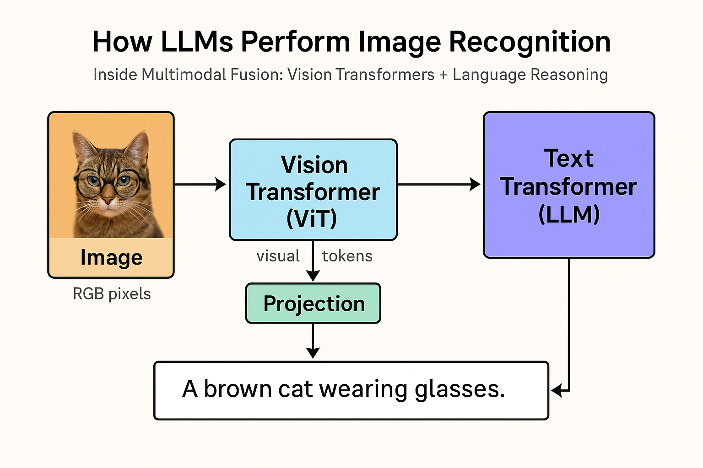
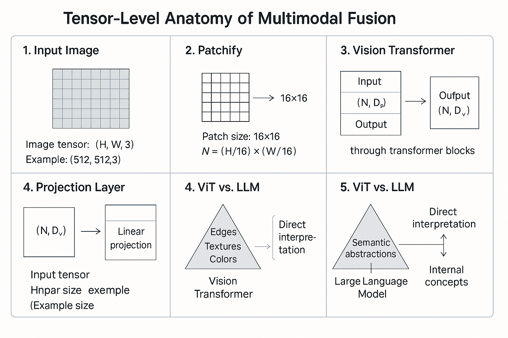

Table of Contents
- 1. Overview
- 2. System Architecture
- 3. Roles of Each Component
- 4. How the Label Emerges
- 5. Fusion Mechanisms
- 6. Tensor-Level View
- 7. Example
- 8. Key Takeaways
- Tensor-Level Anatomy of Multimodal Fusion
- 🔹 Step 1 — Input Image
⸻
⸻
1. Overview
Modern “multimodal” LLMs such as GPT-4o, Gemini 2, and Claude 3 Opus are often described as seeing or understanding images.
In reality, the LLM never looks at pixels.
It receives dense visual embeddings produced by a separate vision transformer encoder (ViT).
The reasoning and interpretation — the actual “understanding” — happen entirely inside the LLM.
⸻
⸻

2. System Architecture
Image (RGB pixels)
↓
Patchify (e.g., 16×16 patches)
↓
Vision Transformer (ViT / CLIP-style encoder)
↓
Visual Tokens [v₁, v₂, …, vₙ]
↓
Projection Layer (dimension alignment)
↓
Language Transformer (LLM backbone)
↓
Text Output (caption, classification, reasoning)
⸻
⸻
3. Roles of Each Component
⸻
⸻
4. How the “Label” Emerges
The ViT does not send a label such as “cat” or “dog.”
Instead, it sends a set of learned embeddings that geometrically encode cat-ness — shapes, edges, fur texture, posture.
The LLM then interprets those embeddings through cross-attention and generates the word “cat” when prompted.
During multimodal training, models learn these mappings through paired datasets:
Input: [image embeddings] + “Describe the image.”
Target: “A brown cat wearing glasses.”
⸻
⸻
5. Fusion Mechanisms
⸻
⸻
6. Tensor-Level View
At runtime:
ViT output → sequence of embeddings
V ∈ ℝⁿˣᵈᵥProjection layer → map to text dimension
P(V) ∈ ℝⁿˣᵈₜToken concatenation:
[ P(v₁)…P(vₙ) t₁…tₘ]
- LLM attention operates jointly:
Queries (Q), Keys (K), Values (V) built over both image and text tokens
Cross-modal reasoning emerges naturally
- Output logits → textual response (caption, classification, or reasoning chain)
⸻
⸻
7. Example
Prompt:
“What’s unusual about this image?”
ViT encodes patches → [fur pattern] [eyes] [object: glasses] [pose] [background] …
LLM cross-attends to those embeddings and concludes:
“Cats don’t usually wear glasses — that’s unusual.”
The reasoning and judgment occur in the language model, not the vision model.
⸻
⸻
8. Key Takeaways
🧠 LLM = reasoning engine, not sensor.
🖼️ Vision Transformer = sensory encoder, not interpreter.
⚙️ Projection layer = bridge between modalities.
🔄 Training objective teaches the LLM to map from visual geometry to linguistic meaning.
⸻
⸻
TL;DR
Multimodal LLMs don’t “see” — they think about what’s been seen.
The vision encoder translates pixels into a token language, and the LLM performs all higher-order cognition on that internal code. the ViT has no idea what it’s looking at in human terms. It’s just compressing visual structure into embeddings — dense geometric coordinates in feature space.
It’s the LLM that translates that geometry into language and reasoning.
So when a multimodal model says “a cat sitting on a couch,” here’s what actually happened:
Vision Transformer:
Encodes the image into ~1,000 visual tokens, each representing patch-level structure (edges, textures, color gradients).
It has never been told “this is a cat” — it only knows patterns.
Projection layer:
Aligns the ViT’s embedding space with the LLM’s token space — same dimensionality, compatible distributions.
⸻
⸻
LLM (text transformer): Performs attention over both text and visual embeddings, infers relationships (“round ears + fur + tail = cat”), then produces the natural-language description.
So the LLM is really doing “vision-language reasoning.”
The ViT is a preprocessor, not a thinker — the LLM is the cognitive core.
⸻
⸻
9. Tensor-Level Anatomy of Multimodal Fusion
Let’s trace a single RGB image as it moves through a modern multimodal LLM pipeline — from raw pixels to natural-language reasoning.
⸻
⸻
🔹 Step 1 — Input Image
Image tensor: (H, W, 3)
Example: (512, 512, 3)
Each pixel has 3 channels (R, G, B).
⸻
⸻
🔹 Step 2 — Patchify
The image is divided into small fixed-size patches.
Patch size: 16×16
Number of patches N = (H/16) × (W/16) = 1024
Each patch is flattened → 16×16×3 = 768-D vector.
⸻
⸻
🔹 Step 3 — Vision Transformer (ViT)
Each patch embedding passes through multiple transformer blocks:
Input: (N, D_v) = (1024, 768)
Output: (N, D_v) = (1024, 1024)
The ViT learns rich spatial features — edges, texture, color, geometry —
but no language semantics.
Result: a sequence of visual embeddings
V ∈ ℝⁿˣᵈᵛ = (1024, 1024)
⸻
⸻
🔹 Step 4 — Projection Layer
We map the visual embeddings into the text-token dimension D_t.
Linear projection: W_proj ∈ ℝᵈᵛˣᵈᵗ
P(V) = V × W_proj
Output: (N, D_t) = (1024, 4096)
Now the visual vectors live in the same space as the LLM’s word tokens.
⸻
⸻
🔹 Step 5 — Token Fusion
The visual tokens are concatenated before the text tokens.
[ P(v₁)…P(v₁₀₂₄) t₁…tₘ ]
Sequence length L = N + M
Typical values: N≈1024, M≈512–2048.
⸻
⸻
⸻
🔹 Step 6 — Joint Attention in the LLM
Within the transformer blocks:
Q, K, V ∈ ℝˡˣᵈₜ (e.g., 4096)
Attention weights: softmax(QKᵀ / √d_t)
The LLM now attends across both modalities:
attends from words → visual tokens (cross-attention)
attends within visual tokens (self-attention)
attends within words (language context)
This is where semantic grounding happens.
⸻
⸻
⸻
🔹 Step 7 — Feed-Forward Reasoning
Each transformer block integrates visual + textual context:
Residual + MLP → LayerNorm → Next Block
Through dozens of blocks, the model builds an internal conceptual map:
“Fur texture + eye shape + whisker geometry → cat.”
⸻
⸻
⸻
🔹 Step 8 — Output Projection
Finally, logits are produced for the vocabulary:
LLM hidden state: (L, D_t)
→ Linear head W_vocab ∈ ℝᵈᵗˣᵛ (V = vocab size)
→ Softmax → Text output
Example Output:
“A brown cat wearing glasses.”
⸻
⸻
⸻
⚙️ Shape Summary
|——–|—————|————-|
⸻
⸻
⸻
🧩 Takeaway
ViT encodes structure → LLM interprets meaning.
Every image becomes a language of embeddings, and the transformer learns to speak that language.
Once fused, text and vision are no longer separate — both live as tokens in the same high-dimensional reasoning space.
visuals {##Visuals}
visual-one
✅

VISUAL 1 — Full-Multimodal Pipeline Diagram
This is the canonical diagram every serious multimodal doc needs.
┌─────────────────────────┐
│ Image (RGB) │
└─────────────┬───────────┘
│
Patchify (16×16)
│
┌─────────────▼──────────────┐
│ Vision Transformer (ViT) │
│ Spatial → Feature Embeds │
└─────────────┬──────────────┘
│ V ∈ ℝⁿˣᵈᵥ
Linear Projection
│ P(V) ∈ ℝⁿˣᵈₜ
┌─────────────▼─────────────┐
│ Fused Token Sequence │
│ [P(v₁)…P(vₙ) t₁…tₘ] │
└─────────────┬─────────────┘
│
Language Transformer
│
┌─────────────▼─────────────┐
│ Reasoning + Text │
└─────────────┬─────────────┘
│
Output Logits
│
“A brown cat wearing glasses.”Where to place it:
Directly after Section 2: System Architecture.
visual-two {##Visual-two}
⸻
⸻
⸻
⸻
⸻
✅
VISUAL 2 — Tensor Shape Evolution Table
A crisp table lets the reader see the pipeline in one shot.
Stage Shape Meaning
────────────────────────────────────────────────────────────────────
Raw image (512, 512, 3) Pixels
Patchify (1024, 768) 16×16 RGB patches
ViT output (1024, 1024) Visual embeddings
Project to text dim (1024, 4096) Aligned tokens
Text tokens (M, 4096) Normal LLM embeddings
Fused sequence (1024+M, 4096) Joint context
Attention matrices (L, L) Full multimodal attention
LLM hidden state (L, 4096) Mixed-mode reasoning
Output logits (V) Vocabulary prediction
Drop this under Section 9.
⸻
⸻
⸻
⸻
✅
VISUAL 3 — Cross-Attention Map
This visual explains exactly how the model “looks” at the image while generating text.
Text Token Query "cat"
│
▼
┌─────────────────────────────────┐
│ Attention Matrix │
│ Q(text) · K(visual)ᵀ │
└─────────────────────────────────┘
▲ ▲ ▲ ▲
│ │ │ │[p₁] [p₂] [p₃] … [pₙ]
Patch embeddings from ViT
Strong activations → ears, fur, tail
Weak activations → background, couch
This makes your page look like a real multimodal interpretability document.
Place this right after “How the label emerges.”
⸻
⸻
⸻
⸻
✅
VISUAL 4 — “LLM Reasoning Stack”
This shows the conceptual climb from geometry → semantics.
┌──────────────────────────────┐
│ Natural Language │
│ (“A brown cat wearing…”) │
└──────────────▲───────────────┘
│┌──────────────┼───────────────┐
│ Semantic Concepts │
│ cat, glasses, object roles │
└──────────────▲───────────────┘
│┌──────────────┼───────────────┐
│ Multimodal Attention │
│ links visual + text tokens │
└──────────────▲───────────────┘
│┌──────────────┼───────────────┐
│ ViT Geometry + Patterns │
│ fur, edges, colors, posture │
└──────────────┼───────────────┘
│┌──────────────┴───────────────┐
│ Raw Pixels (RGB) │
└──────────────────────────────┘
This makes your article visually explain the cognitive ladder inside multimodal models.
⸻
⸻
⸻
⸻
✅
VISUAL 5 — “What the ViT Actually Sees vs What the LLM Thinks”
Very powerful for readers:
Vision Encoder (ViT) Output
┌────────────────────────────────────────┐
│ Patch embeddings: │
│ • edge orientations │
│ • fur texture gradients │
│ • local color histograms │
│ • blob and contour activations │
└────────────────────────────────────────┘
✘ No concepts
✘ No objects
✘ No language
✘ No “cat”▼ Passed into LLM as vectors ▼
Language Model Interpretation
┌────────────────────────────────────────┐
│ “round ears + whisker pattern + │
│ bilateral symmetry → cat” │
│ │
│ “fur + eyes + object = glasses” │
└────────────────────────────────────────┘
✔ Concepts
✔ Objects
✔ Relationships
✔ Explanations This pair nails the entire philosophy of multimodal alignment.